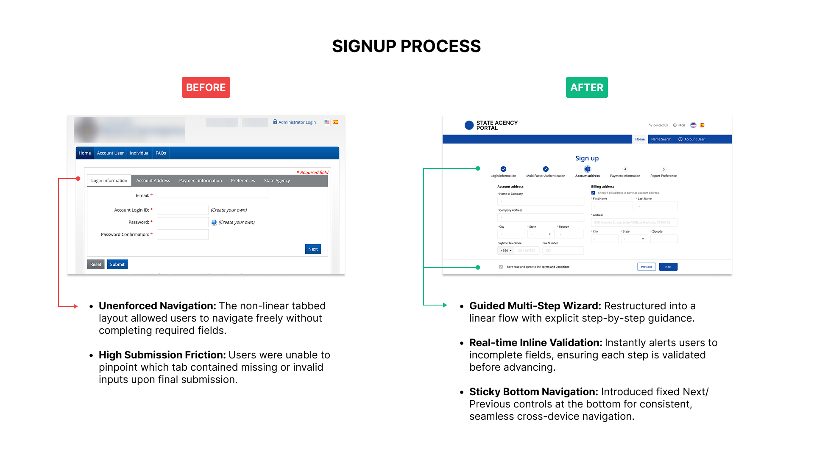
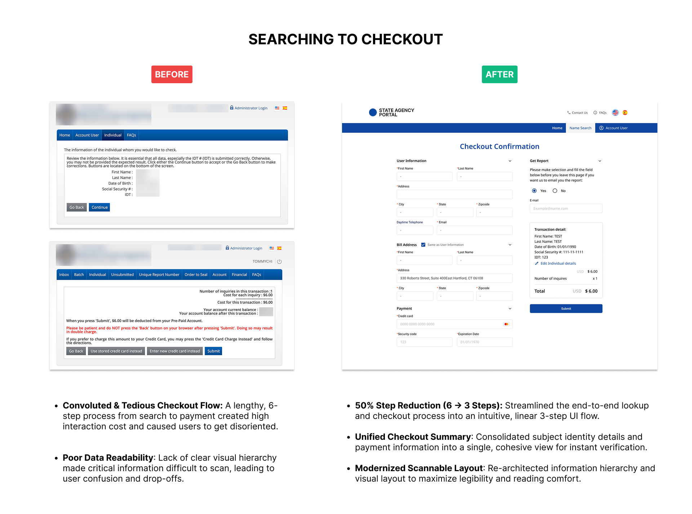
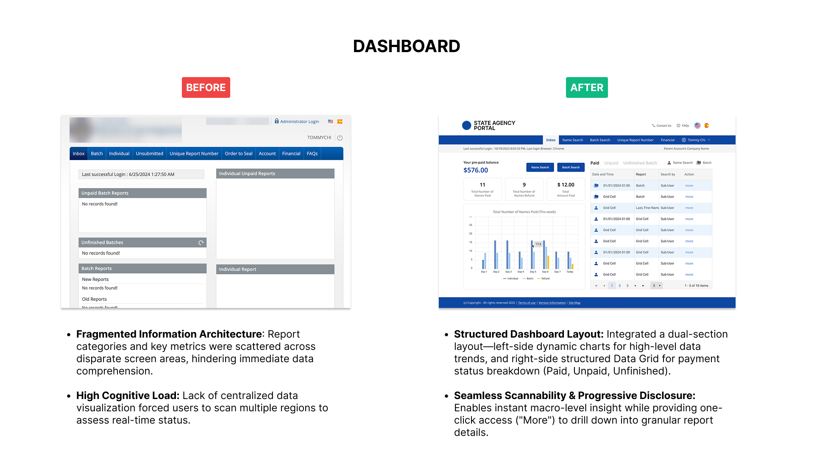
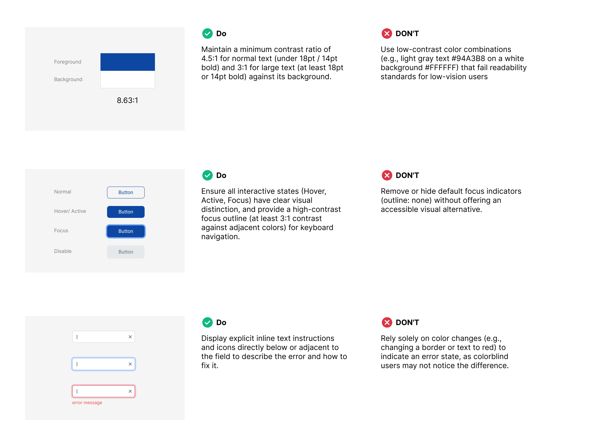

U.S. State Government Project · Public Records System · 2025
Redesigning a US Public Records Search: 6 → 3 Steps, 100% WCAG 2.2 AA
- My role
- Product Designer & PM — led the end-to-end UI/UX redesign, defined the WCAG standard, and built the design system, coordinating closely with front-end engineering to keep design tokens and components aligned.
- Timeline
- September 2024 – January 2025
4 months - Core impact
-
- 50% reduction in core search flow steps (6 → 3), resolving duplicate payments and associated refund workloads
- 100% WCAG 2.2 AA compliance, removing legal compliance risk
- −67% front-end dev time per feature module (3 weeks → 1 week) via a design system and tokens

Case summary
Problem
Legacy system failed WCAG 2.2 AA, and a complex flow caused duplicate payments and heavy refund workload for staff.
Decision
Simplified the core flow first since it caused the duplicate payments, then rebuilt components to WCAG standards and created a design system for front-end reuse.
Result
Core search flow 6 → 3 steps (-50%); 100% WCAG 2.2 AA compliance; front-end dev time for the same feature module 3 weeks → 1 week (-67%).
Project background
A US public records system used by both the general public and government agencies. I led the redesign of a legacy system whose complex search flow caused duplicate payments and a heavy refund workload, whose layouts broke on mobile and tablet, and which did not meet WCAG 2.2 AA.
01 Pain points & challenges
WCAG Compliance
The legacy system failed to meet WCAG 2.2 AA accessibility standards, featuring insufficient color contrast, small typography, and unclear interactive component states.
Broken Responsive Layout
Inconsistent cross-device experience, with UI components breaking severely on mobile and tablet devices.
Complex Flow Causing Duplicate Payments
A cumbersome 6-step search process led users to pay twice, creating a heavy refund workload for administrative staff.
02 Action & decisions
Action A: Simplifying the Core Flow That Caused Duplicate Payments



Research & Information Architecture (IA):
- Audited existing user flows, UI screens, and UX bottlenecks to eliminate redundant steps.
- Restructured the account registration and record search flows, cutting the core search flow from 6 steps to 3.
Dashboard Redesign & Visual Hierarchy:
- Redesigned the administrative Dashboard, resolving fragmented data cards and unstructured metrics by establishing a clear visual hierarchy.
Responsive UI Design & Flow Execution:
- Applied the newly built Design System to output screen layouts based on synthesized UI flows.
- Guaranteed 100% RWD responsiveness across all viewports for a seamless cross-device experience.
Action B: Rebuilding Components on a WCAG 2.2 AA Design System

Accessibility Standards & Componentization:
- Defined design guidelines aligned with WCAG 2.2 AA compliance, optimizing color contrast, font scale hierarchy, and component visual feedback.
- Built a unified component library and Design System on top of Telerik UI Library to enforce visual and interaction consistency across all modules.
Design-to-Dev Alignment:
- Structured design tokens in Figma Variables and aligned them precisely with engineering's variable naming conventions, standardizing interaction details (e.g., Focus/Active states) and cutting front-end development time per feature module from 3 weeks to 1.
03 Result & impact
Core search flow cut from 6 steps to 3, removing the root cause of duplicate payments and refund workload.
Met all WCAG 2.2 AA color contrast and accessibility standards, delivering an inclusive experience for diverse user groups.
Front-end development time for the same feature module cut from 3 weeks to 1 week, by aligning Figma Variables (design tokens) with engineering naming conventions.
04 Reflection & next steps
Demonstrating a senior product design mindset through strategic trade-offs under constraints and data-backed plans for future iterations.
Strategic Trade-off: Design System vs. Custom Components
To balance strict cross-device responsiveness with WCAG 2.2 compliance under timeline constraints, I strategically leveraged Telerik's out-of-the-box UI framework. While trading off a minor degree of custom visual branding, combined with token alignment it cut front-end implementation time per feature module by 67%.
What I would do differently
Define Analytics Tracking Early
Establish a GA4/GTM Event Tagging Plan right at the Wireframe stage. Tracking button clicks and core conversion drops from Day 1 avoids retroactive tagging post-launch.
Establish Edge-Case Hand-off Checklists
Formulate a default Edge-Case Checklist for engineering hand-off, explicitly marking scenarios out-of-scope for the current sprint to ensure transparency.
Next steps
Optimize Flow around Refund Rates
Use Refund Rate as the primary metric to evaluate search optimization. Combine GA4 data with Heatmaps to continuously monitor user behaviors for A/B testing iterations.
Refine Core Interactive Components
Customize default UI library elements (e.g., Datetime Picker) to better align interaction patterns with user mental models.
Automate CI/CD Accessibility Audits
Integrate automated WCAG testing tools (such as axe-core) into the CI/CD pipeline to maintain continuous compliance across product updates.
Standardize Multi-Timezone Data Consistency
Unify timestamp display logic between frontend UI and backend PDF reports to ensure a seamless experience for multi-regional and cross-timezone users.